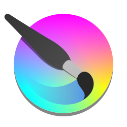

Krita
Frozen in Launcher GPL-3.0Professional digital painting studio for concept art, textures, and 2D animation.
Role in the Game Stack
Krita is an open-source painting program designed for illustrators, concept artists, and texture painters. It features sophisticated brush engines, wrap-around seamless texture mode, layer masks, color management, and frame-by-frame 2D animation tools.
Key Capabilities & Strengths
- Advanced brush engines with stabilizer and color smudge
- Wrap-around tiling mode (W key) for seamless texture authoring
- Non-destructive layer management, filters, and clipping masks
- Integrated frame-by-frame raster animation timeline
Within sovereign and telemetry-free creative pipelines, Krita serves as a direct open-source alternative to proprietary software.
OGS Launcher Integration & Frozen Releases
The Open Game Stack Launcher packages verified, immutable builds of Krita. These releases are cached locally and launched without network access, vendor telemetry, or external licensing servers.
| Version | Size | SHA-256 Checksum | Executable | Notes | Archive |
|---|---|---|---|---|---|
5.3.3 |
223.2 MB | 06bc1a8c0e4338122e37ee1d8557e4c5f8f3cd03d52abe2c759a0a8aac4fbc05 |
bin/krita.exe |
Release Notes | Download ZIP |
5.2.15 |
210.0 MB | b8e61077efffaaaaf0a5cb322a514643d0e1cfe22bcb8a374e421874b4a887ef |
bin/krita.exe |
Release Notes | Download ZIP |
Project Manifest Configuration (ogs_stack.json)
Pin Krita to this frozen version in your project repository by declaring it inside your ogs_stack.json manifest:
{
"name": "MyGameProject",
"version": "1.0.0",
"tools": [
{
"id": "krita",
"version": "5.3.3",
"category": "2D"
}
]
}Open-Source Vital Signs
Project health, licensing, and cross-platform runtime support for Krita:
| Software License | GPL-3.0 |
|---|---|
| Supported Platforms | Windows Linux macOS |
| Stack Category | 2D |
| Official Website | https://krita.org/ |
| Source Repository | https://invent.kde.org/graphics/krita |
Getting Started & Learning Resources
Official documentation, tutorials, and community hubs to help game developers master Krita:
- [Documentation] Krita Manual
- [Community] Krita Artists Forum
- [Tutorials] Krita Learn Tutorials